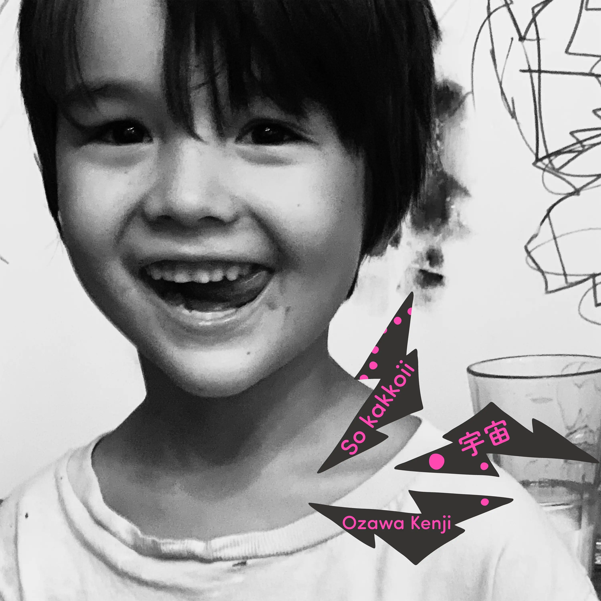

Zine#52
我们都无法成为大人
🎵 彗星 - 小沢健二
{kind=link}

そして時は 2020
时光流转至2020年
全力疾走してきたよね
我们曾全力奔跑过呢
1995年 冬は長くって寒くて
1995年的冬天漫长而寒冷
心凍えそうだったよね
连心都快要冻僵了吧
だけど少年少女は生まれ
但少男少女们诞生了
作曲して 録音したりしてる
创作歌曲 录制唱片
僕の部屋にも届く
连我的房间都能听见
今ここにある この暮らしこそが
此刻拥有的生活本身
宇宙だよと
就是宇宙啊
今も僕は思うよ なんて奇跡なんだと
至今我仍这么想 多么不可思议的奇迹
自分の影法師を踏むように
像踩着自己影子般
当たり前のことを
注视着稀松平常的事物
空を横切る彗星のように見てる
如同划过天际的彗星
2000年代を嘘が覆い
谎言笼罩着千禧年代
イメージの偽装が横行する
虚假形象横行无忌
みんな一緒に騙されてる 笑
大家都被骗得团团转呢 笑
だけど幻想はいつも崩れる
但幻想终会破灭
真実はだんだんと勝利する
真相将逐渐获胜
時間ちょっとかかってもね
虽然需要些时间
今ここにある
此刻拥有的
この暮らしでは すべてが起こる
这段生活里 一切都在发生
儚い永遠をゆく 波打ち砕ける
走向易逝的永恒 浪花破碎
真っ暗闇を撃つ 太陽みたいに
像击穿黑暗的太阳般
とても冴えた気持ち グラス高くかかげ
怀着澄澈的心情 高举酒杯
思いっきり祝いたいよね
好想尽情庆祝啊
今遠くにいるあのひとを 時に思い出すよ
偶尔会想起远方的那个人
笑い声と音楽の青春の日々を
充满笑声与音乐的青春岁月
再生する森 満ちる月 続いてゆく街の
循环播放的森林 满月 绵延的街道
空を横切る彗星のように
如同划过天际的彗星
あふれる愛 止まらない泉
满溢的爱 永不停歇的泉水
はるか遠い昔 湧き出した美しさは ここに
远古时代涌现的美丽 此刻就在这里
今ここにある この暮らしこそが
此刻拥有的生活本身
宇宙だよと
就是宇宙啊
今も僕は思うよ なんて素敵なんだろうと
至今我仍这么想 多么美好啊
澄む闇 点滅する赤い light 脈を打つよ街と
澄澈的黑暗 闪烁的红色灯光 与城市同脉搏
空を横切る彗星のように見てる
如同划过天际的彗星般注视着
あふれる愛がやってくる
满溢的爱正奔涌而来
その謎について考えてる
思考着其中的奥秘
高まる波 近づいてる
高涨的浪潮 逐渐逼近
感じる
感受着
Zine#51 分享了小沢健二的「天使たちのシーン」，它是電影 我们都无法成为大人 的插曲，我後來去看了。「彗星」這首也是電影中的插曲，影片的叙事回到了 2020 年，主角和曾經的友人告別，坐上了出租車，車上的广播播送著：
…的確是這樣，而且現在街道在晚上 8 點就是一片黑暗1，總是會覺得有點寂寞。虽然最近气氛都這麼阴沉，但有一首歌正因為是在這種時候想讓大家聴聴，無論現在大家抱著怎樣的想法過活，都希望可以肯定自己的現在，就算是現在無法肯定自己的人，總有一天回想起這一刻時，一定有人可以被這首歌的温柔拯救，希望多少能將這份心意傳達給這些人，請聴小沢健二先生的「彗星」。
車在行駛，當音欒響起，小沢健二唱到「1995年 冬は長くって寒くて」時，窗外的景色也从 1995 年開始了閃回，過去的許多片段不斷出現。對這一段印象還蠻深刻的，也記住了小沢健二的「彗星」。「彗星」的歌詞也和電影情節很搭，閃回中出現了那些過去回憶中的人和事，而歌詞是這麼唱的：
今遠くにいるあのひとを 時に思い出すよ
偶尔会想起远方的那个人
笑い声と音楽の青春の日々を
充满笑声与音乐的青春岁月
聴著聴著，有時也會將人扯到過去的回憶中。
推薦看看 「彗星」的 MV。片尾曲「燃え殻」(原著作者名字也是這個) 也不錯。
News | Article
夠了就好 by Tian-Yan
如今有的人用 AI 做示意圖，看起來內容很多，很炫，但元素太多，會讓人分不清主次。示意圖本身應該起到讓人直觀了解概念的作用，但複雜的示意圖反而讓人感到困擾。要學會克制，夠了就好。
稱呼與名字 by yangbear
確實是會有點糾結的問題。我會傾向用網站中找到的作者的名字。
I Am Retiring from Tech to Live Offline by Chad Whitacre
打字機打出來的文字真好看，上面還有很多手寫的修改痕迹。作者選擇回到綫下，多感受与人之間的連接也挺好的。
See also: OpenClaw vs. Amish—I ran as far as I could from agentic AI ❧ Open Path #5 - YouTube
Demand Is Booming for New No Tech, Repairable Tractor by Jason Koebler
「我每天都與農民交談，每天都聽到農民說他們如何去購買 1987 年的機械，以便上面沒有電腦，」Wilson 說。「這一切都源於與一位客戶的簡單討論，他希望能在一天開始時啟動（拖拉機），使用它，並在一天結束時關閉它。它需要能工作，所以這就是我們建造的東西。」
「高科技」的拖拉機複雜度高，更容易出故障，出了故障，農民自己無法修理，只能等維修人員，而這可能就錯過了農活關鍵期，等修好時拖拉機己經用不上了。而那些「低科技」的拖拉機大多是機械結构，没有複雜的電控系統，更少出故障，也更容易維修，可靠耐用。
相比複雜易坏的電子產品，我也更喜歡機械結构的、簡单耐用的產品。
See also: Zine#47::An Ode to Things That Do One Thing Well by Candost Dagdeviren
Librarians on Horseback by Kirsten Chervenak
在 1930 年代，「馱馬圖書館計畫」（Pack Horse Library project）應運而生。這項計畫透過支付當地女性（以及少數男性）在肯塔基州東部山區騎馬運送書籍，來實現羅斯福新政中擴大識字率和創造就業的目標。
當圖書管理員為老婦人朗讀並聽她講述童年故事時，烤玉米的奶油香味瀰漫在房間裡。麵包烤好後，圖書管理員分到了一塊金黃色的麵包，上面抹著現攪的奶油。她飢腸轆轆地品嚐著，這麵包比她平時吃的更有顆粒感，也更有嚼勁，但味道溫暖而令人慰藉。隨後，圖書管理員將手寫的麵包食譜放進背包，帶著一塊用布包好的麵包，騎上騾子踏上歸途，心中始終在想：這些山丘中還隱藏著哪些食譜呢？
When You Listen to Music, You’re Never Alone by Daniel A. Gross
文章里提到的「無聲 Disco」⸺ 一群人戴着自己的耳機共舞，聴起來蠻有趣的。
「當你獨自待在家裡時，會感到空虛，」他說。「然後你放起音樂，突然間你會覺得好多了，因為你不再孤單。並非字面上真的有人陪你，而是你感覺有了伴。」
On the Difference Between Rest and Idleness
休息 (Rest) 帯有一種目的性，是為了後面更好的工作而做準備。
而閒散 (Idleness) 是没有目的性的，閒散就是去虛度一段時光、浪費一段時光，這段時光不需要產生任何價值，閒散不是冥想、不是去无聊，它什麼都不帯來。閒散還挺難做到的，人總是會不自覺的要為一段時間、一件事賦予價值。
這個立場聽起來容易，做起來卻很難，因為將其合理化的誘惑極大，而且這種誘惑來自內心。你坐下來準備閒散，幾分鐘內，某個聲音就開始構建藉口：這對我有好處，這會讓我更有創意，這是在為明天恢復專注力。這個聲音並無惡意。這是一個從小被教導「時間必須有所交代」的人的聲音，它無法忍受哪怕是一個純粹拒絕交代的鐘頭。要做到真正的閒散，你必須讓那個聲音失望。你必須坐在椅子上，並主動拒絕從坐在椅子上獲得任何好處。當你察覺到自己在想「閒散對我有好處」的那一刻，你就已經失去了它。它變成了休息。它已经重新回到功利的經濟之中。
也不是說休息不好，休息是必要的，該休息就休息。不過也應該給自己一點真正的自由時間，不為什麼的自由時間。
它什么也不产生。它什么也不改善。你无法用任何可以计量或出售的方式证明它会降低你的皮质醇。那是你无所事事地度过一小时，既无目的也无收益，看着光线变化，与死者为伴，喝下第二杯你并不需要的那杯。
休息是被允許 (permitted) 的，因為它能讓你變得更好。懶散則是可疑的，因為它可能讓你一去不復返。
The Idle Gazette, No. 3 — concerning a walk and a poem thrown away
這週去散個步吧，別帶手機。
不是靜音，也不是螢幕朝下放在口袋裡發出隱忍急促的震動。而是把它留在家裡、桌上，或完全在另一個房間，遠到要拿回它必須經過一番決定的距離。然後，在手中無物、耳中無聲、且無人能聯繫到你的情況下，至少散步三十分鐘。
留意最初幾分鐘那種特殊的焦慮感。那是一種真實的、近乎生理上的不適：手不由自主地伸向那件不在身邊的東西，因無法被聯絡到而產生的微小恐慌，以及在沒有設備媒介的情況下行走於世間那種奇異的赤裸感。不要對抗這種不適，也不要因此評判自己。這就像一塊久未使用的肌肉在重新活動時發出的抗議。
接著，留意在那之後、當你不再試圖伸手拿手機時會發生什麼。你的注意力無處可去，只能轉向外界，於是它便轉向了外界。你開始看見華瑟在他漫長的散步中所見的事物：牆壁與人行道交接的獨特方式、窗戶後的一張臉、光線正呈現著稍縱即逝的姿態。你不會記錄下任何東西。這正是重點。你只是單純地行走、觀察、然後回家，沒有留下任何實質的證明，卻帶回了一些你無法準確命名的東西。
⌂ 預計投入：三十分鐘和一些意志力
☽ 預計回報：不成比例地豐厚
放下手機，什麼也不帯 (好想帯播放器和耳機！)，散步去了。
(A FEW HOURS LATER…)
回來了，剛開始下電梯會想看看手機，後面就没啥不適了，去買了瓶飲料（帯了點紙幣），散步了不知道多久（因為没有手機，不太清楚時間），想了想 Zine 的內容，累了就回了。
I want my friends to have blogs too by Daniel
寫博客也是一種寫作，所以寫博客也有寫作的优點：
- 可以促進更深入的思考、整理思緒
- 將想法和情緒變成文字的過程，也是一種释放，能帯來療癒和慰藉
希望朋友也寫博客，是因為通過博客或許能看到朋友的另一面，能加深對彼此的了解。
如果你打算開始寫，BlogBlog.Club 上整理了很多相關資源，可以用於參考。如果過程碰到問題，也可以邮件和我交流，或許能給你提供一點帮助。
摘录
部落格的作用是打破一個人的語境；它們延伸並揭示了朋友和熟人那些你從未想過要詢問的面向。發現某人其實熱衷於某種小眾愛好，或者發現我的朋友是一位才華橫溢的詩人，這讓我感到純粹的喜悅！當你認識某人已久，卻在此時才發現你們的友誼還有另一個值得挖掘的層次時，這種感覺就更棒了。
部落格容許更深層次的思考；並非所有事情都適合面對面交談。我們有時需要時間來整理思緒，而詳細的概念通常透過文字能被更好地理解。老實說，我們把自己侷限在短暫的處理時間和快速反應中，這真的很可惜。來回對話固然有趣，但細緻入微的表達亦然；而且沒有什麼能阻止你針對自己寫過的內容進行交談 ⸺ 想像一下那會多有深度？寫部落格真的重新找回了那種「手寫信」的火花。
關於部落格和寫作，我非常享受的一點是它的療癒本質。無需引用任何資料來源，寫日記的過程已被證明對心理健康有益，我認為部落格的某些面向也是如此。仔細挑選詞彙來描述我現狀和生活點滴的過程，帶有一種慰藉感。或許這是一種掌控感？我寫下的每個字都屬於我，我可以選擇如何表達以及說些什麼。也可能是因為這種較慢的思考方式，讓我有時間去拆解事物，並理解其中的細節與全貌。這是一種體悟與反思。更別提我對上傳的作品所感到的自豪。那是我寫的，這很酷。所以，即使不是為了別人……作為一種習慣，部落格在獨處時也是美妙的。
See also: 12 months of blogging by Matt
所以，我給剛起步的人什麼建議？
不要擔心沒人閱讀、評論、點讚，或任何那些被認為能賦予寫作「價值」的互動指標。追求自由，並持之以恆地追求，我保證你會發現自己愛上寫作。
Cool Bit
-
探索精彩的鑲嵌藝術，了解其運作原理，並創作出屬於您自己的作品。
How many consecutive hyphens can you have in a domain name? by Terence Eden
域名里最多可以有多少個
-(連字符)？-
不錯的漫畫。
-
模似 Minecraft 探索 node_modules，說是探索，也只是能看看包名。
-
懸浮在文章上的交互蠻不錯的。
部落格 & 電子報擴列，感興趣請去看看他們的部落格 :)
- 刷比小廢報 新發現的喜歡的電子報。
- ikuka 日文老師，了解日文和台湾
- 廢文小天地 上面兩個部落格就是從 雜談 #3 發現的
- 資工小廢物 - JN 從 JN 這也發現了一些喜歡的部落格
- YangBear pixel art 好玩
- Shuyu Pixelart 也是有好玩的 pixel art
- Food Icon – 宜蘭人圖鑑 by Shuyu
- 那些沒人在乎的事 動畫、旅遊、聖地巡禮 (维基萌 也是聖地巡禮大佬)
更多部落格請去翻翻他們的 Blogroll 吧。
Tutorial | Resource
How The Heck Do Traffic Lights Work? by Shri Khalpada
關於紅綠灯是如何運作的。
-
The words designers use when they know what they’re looking at.
Code Related
How building an HTML-first site doubled our users overnight by Alistair Davidson
作者將一個公共事業相關的項目從一個 React 单頁面應用重构成 HTML 优先的應用，提高了網站的可用性，即使用戶瀏覽器性能差也能訪問，上線后，頁面的使用人數翻了一倍。
拒絕使用舊瀏覽器、網路連線差或使用輔助技術的用戶是不可接受的。對於壟斷性的公共服務來說更是如此。 […] 構建一個能在 3G 連線的 PlayStation Portable 上運行的 Web 應用程式吧 ⸺ 如果你做到了，它將適用於所有用戶，且在 30 年後依然能正常運作。
See also: The unreasonable effectiveness of simple HTML by Terence Eden
You probably shouldn’t be annotating focus order by Eric Bailey
大多数時候，用合適的語義化标簽，內容按文檔流順序排列就足够了，不需要去調整焦點順序。可以多用 Tab 手動測試一下頁面，確保焦點明顯、順序正確、不會跳過任何需要聚焦的內容。
See also: Accessibility: Why You Need to Work Toward Progress Over Perfection by Meryl Evans
無障礙的核心在於 進步勝於完美 。重要的是開始行動，並且……
不斷迭代……
持續改進……
並記得為取得的進展慶祝。
「在了解更多之前，盡力而為。當你了解更多後，就要做得更好。」—— Maya Angelou
-
建議用 Scoped Commits 而不是 Conventional Commits，原因：
- 範圍 (scope) 比類型 (type) 更重要和有用，應該放前面
- Commit Message 足以傳遞類型的信息
- Conventional Commits 可以用於生成 Changelog，但 Changelog 是面向用户的，基於 Commit Message 生成不合適
更多理由見：
- Stop Using Conventional Commits by Sumner Evans
- Conventional Commits, considered harmful by richvdh
我會嘗試一陣看看。不過如果是協作項目，還是要遵循項目的規範。 (連結是從 本周回顾：2026 年 6 月 14 日 看到的)
Upcoming breaking changes for npm v12
npm v12 開始，自動運行的 npm install 行為將轉變為必須明確選擇加入的行為，從而避免不經意中被攻擊。
AI Related
Human Routers of Machine Words
當我打開一個連結，例如在 Hacker News 上，看到一篇顯然是由 AI 撰寫的部落格文章或 GitHub README 時，我心中五味雜陳。我感到被冒犯，因為這就像是被愚弄了，彷彿作者認為我是個不會察覺或不在乎的傻瓜。我感到悲哀，因為這種經歷已變得如此普遍，竟然有這麼多人樂於將自己的垃圾傾倒在公共空間，還署上自己的名字。我對作者感到蔑視，因為如果你用 AI 來寫作，你簡直是在浪費生物量。我們開門見山地說吧：一個人如此急於取代自己，以至於在機器甚至還寫不好時就讓它代筆，這如果不叫卑劣，還能叫什麼？我一看到這些人就會直接封鎖。
對於代碼，可以將借助 AI 來帮忙。但對於寫給人看的內容也全交給 AI，這樣的內容我也很反感，我會怀疑作者自己會不會看這些枯燥無味的內容，這也會讓我對這個人的內容失去信任。
有人會說「想法是我的，寫作是 AI 的」，但想法本身是很模糊的，而寫作這個過程正是把模糊的想法錘炼清晰，寫作不是可有可無的。借助 AI 寫作，反映出作者是懶的、不負責任的，他知道將想法轉換成文字的過程是艰難的，但他不願意付出努力去完成，而是放弃思考，全部交給了 AI，并將 AI 不經思索的內容當作是自己的。
通常當我們以為自己理解了某件事並試圖寫下來時，寫作的行為本身就會向我們揭示自己理解的匱乏。我們的筆寫下了「因為」二字，然後突然停住了。我們原以為自己明白某件事的「原因」，卻發現事實並非如此。我們以「顯然」作為句子的開頭，隨即發現我們想寫的內容一點也不顯然。有時我們用「因此」連接兩個子句，結果卻發現我們的推理鏈條是有缺陷的。
那種認為想法是完全成形後才出現，而將其轉化為文字僅僅是苦差事的觀點是錯誤的。在寫作之前不存在所謂的構思，因為寫作本身就是思考。寫作是思考的極致。一個不寫作、跳過將模糊想法「僅僅」合成文字這一步驟的「思想家」，其實並沒有在思考。
See also:
Active recall by Herman Martinus
我最近正在讀村上春樹的《關於跑步，我說的其實是……》，其中有一句話讓我印象深刻：
或許我就是那種過於刻苦鑽研的人，但如果不把想法寫下來，我就無法真正掌握任何事情。
這句話引起了我的共鳴，因為我也發現，理解一個概念或想法最好的方式就是寫下來。單純閱讀能帶給我的幫助有限。將大腦中儲存的內容轉化為清晰易懂的文字，這個過程本身就是思考與理解。
LLMs and almost good code by kqr
tl;dr：我現在的新觀點是，頂尖的 llm 在處理簡單任務時，產生的程式碼可能比實際需要的複雜度高出約 10%。我還認為，我們太容易接受這種複雜性，因為它是此時、此地產生的程式碼，解決了眼前的問題。這可能會對長期維護產生影響。
If Claude Fable stops helping you, you'll never know by Jonathon Ready
我們實施了新的干預措施，限制 Claude 在處理針對前沿 LLM 開發請求時的有效性。使用 Claude 開發競爭模型已經違反了我們的服務條款，但通過我們的防護措施執行此限制，可以避免加速那些最願意違反這些條款的行為者。與我們針對網絡安全、生物學和化學以及蒸餾嘗試的干預措施不同， 這些防護措施對用戶是不可見的。 Fable 5 不會退回到不同的模型。相反，防護措施將通過提示詞修改、轉向向量或參數高效微調（PEFT）等方法來限制有效性。
Statement on the US government directive to suspend access to Fable 5 and Mythos 5
美國政府援引國家安全權限，發布了一項出口管制指令，暫停任何外國國民（無論是在美國境內還是境外，包括 Anthropic 的外國籍員工）對 Fable 5 和 Mythos 5 的所有訪問權限。該命令的實際效果是，我們必須突然為所有客戶禁用 Fable 5 和 Mythos 5，以確保合規。對所有其他 Anthropic 模型的訪問 將不受影響。
See also: Dangerous Technology For Americans Only by Armin Ronacher
Code is Cheap(er) by Carson Gross
LLM 讓代碼变得廉價，但因為代碼產出太快、太多，理解代碼反而变得昂貴了。代碼量的快速膨脹，往往也帯來 複雜度 的膨脹，导致後續難以維护。
為了應對 LLM 生成代碼的危險，我提倡成為一名「減法與約束型」工程師：
這種工程師敢於拒絕，仔細審查 LLM 的輸出，提出簡化建議，並在處理 LLM 生成的代碼時始終保持主導權。
他們不以創造代碼為榮，而是以從系統中移除或阻止進入系統的代碼（和層級）為傲。
這種特質更像是雕塑家，而非建築工。
在某種程度上，建築工的精神仍適用於系統設計層面：優秀的工程師需要知道如何有效地組合組件來構建系統。然而，即使在這裡，我認為減法思維也很有用：移除不必要的組件和系統邊界，以簡化系統部署和組件間的交互等。
Please Do Not Vibe Fuck Up This Software
rsync 用 AI 將測試套件從 shell 換成了 python，引來了很多的反對的聲音。作者則寫了篇文章回應了這些貭疑，見：rsync and outrage. I gave up blogging a long time ago… by Andrew Tridgell。
現在借助 AI，大量的安全問題被發現和暴露，開發者可能都顧不過來。人們對 AI 反感，主要是擔心使用者不負責任，AI 在目前來說只是個工具，用的好坏取决於使用者。顯然也存在很多用 AI 粗制濫造的東西。
- AI & 工作
- 当 AI 拿走一切之后 by Airing
- 【日常碎碎念】AI取代前端？ by 7gugu
How LLMs Actually Work by 0xkato
關於 LLM 的運作原理。
A Visual Feedback Loop for Electron Apps with Claude Code by Juri Strumpflohner
讓 Claude Code 能「看見」Election 的界面內容，從而進行視覺驗證。
-
(An agent skill that) Use your most capable model to audit your codebase and write plans for cheaper models to execute.
Tool | Library
-
A JavaScript library for doing geometry (幾何學).
-
Tiny javascript library for creating accessible modal dialogs.
-
Develop, preview and build production-ready emails in a modern environment, with Vue and Tailwind CSS.
-
Self-host any Google Font in under 60 seconds. GDPR compliant, Core Web Vitals optimized.
-
wallabag is a self hostable application for saving web pages: Save and classify articles. Read them later. Freely.
See also: A sign of a good tool is that you don’t notice it - one year with wallabag by Juha-Matti Santala
Emacs
-
SVG-rendered tab-bar, tab-line, header-line and mode-line for Emacs.
See also:
- svg-line: Better Status Bars for Emacs by Charlie Holland
- Emacs SVG Benchmark Reveals Gaming-Caliber Frame Rates by Charlie Holland
-
A minimal mode line inspired by doom-modeline
Emacs Appearances in Pop Culture by Ian Y.E. Pan
Emacs 在影視文化中的痕迹，還有 Serial Experiments Lain。
- Useful Emacs key bindings by Spencer
- Setting up offline email for Microsoft O365 with notmuch and emacs by Ashish Panigrahi
-
Integrate difftastic into magit.
- How I wrote an Emacs plugin to build my blog by Eugene
-
Pixel art-inspired Emacs themes.
- Emacs loves AsciiDoc by Bozhidar
- From DC Toedt: Copy Org Mode as Markdown by Sacha Chua
- The Hidden Git Stash Keys in Emacs VC Directory Mode by Emacs Dwelling
- Emacs: flat Dired listing for REGEXP, optionally up to DAYS since last modification by Protesilaos
Even More Batteries Included with Emacs by Karthinks
一些 Emacs 內置功能分享。
Denote Journal (denote-journal.el) by Protesilaos
之前寫周記的時候是用 org capture 按照 datetree 生成一個 heading 來寫，或許可以試試 Prot 這個擴展。
一些话 | 摘抄
How to See a Bird: Robert Macfarlane and Jackie Morris’s Exquisite Illustrated Field Guide to the Wonder of the Winged by The Marginalian
察覺是命名的第一步；認知則是了解事物及其相互關係的首要環節。知識可能引發好奇，好奇轉化為關懷，關懷促成行動，而行動帶來改變。但這是一條脆弱的連鎖，極易斷裂 ⸺ 其環節必須一次又一次地重新鍛造與連結。
James Baldwin on How to Live Through Your Darkest Hour and Life as a Moral Obligation to the Universe by The Marginalian
凌晨四點可能是一個令人崩潰的時刻。這一天，無論曾是怎樣的一天，都已無可爭議地結束了；幾乎在瞬間，新的一天便開始了：而人該如何承受它？大概不會比承受即將結束的那一天好到哪裡去，甚至可能更糟。此外，終有一天會到來，那是你無法回憶的一天，是你生命的最後一天，而在那一天，你自己將變得像所有逝去的日子一樣，再也無法找回。
這是一個可怕的推測 ⸺ 或者更確切地說，是一種可怕的認知 ⸺ 總有一天，你的眼睛將不再注視這個世界。你將不再出現在宇宙清晨的點名冊上。光芒會為他人升起，但不再為你。
有時，在凌晨四點，這種認知幾乎足以迫使自己與所有的痛苦和錯誤達成和解。既然無論如何，這一切終將結束，那為什麼不 ⸺ 對生活 ⸺ 再試一次呢？
我認為我們所有的航行都將我們驅向那裡；因為我一直覺得，一個人只能被另一個人救贖。我意識到我們並不常救贖彼此。但我同時也意識到，我們有時確實能救贖彼此。
因為，或許 ⸺ 或許 ⸺ 從現在到最後一天之間，會發生一些奇妙的事情，一個奇蹟，一個關於連貫與釋放的奇蹟。而一個人不穩定的注意力所聚焦的奇蹟，無論如何表述，或無論如何保持緘默，始終是同一個。那就是愛的奇蹟，這種愛強大到足以引導或驅使一個人進入成熟的偉大境界，或者換句話說，進入對自身身份的理解與接納。因為我相信，某種深層且根深蒂固的本能讓我們知道，只有這種充滿激情的成就才能超越死亡，才能讓生命從死亡中萌芽。
在凌晨四點，當一個人覺得自己可能根本無法支撐這個奇蹟時，所有的傷口都甦醒並隱隱作痛，所有可怕的不足從牆壁和地板上凝視並叫囂著 ⸺整個宇宙縮小成了自我的監獄 ⸺死亡就像高大黑暗的山路上唯一的燈光，在那裡，一個人永遠、永遠地迷失了方向。⸺ 我們中的許多人就在那時隕落。
但如果一個人能回溯、能深入 ⸺ 深入內心，深入生命 ⸺ 並在那裡找到一些見證，無論多麼出乎意料或矛盾，只要能證明自己的現實，就能使人（儘管可能不那麼精神抖擻地）去面對另一天……在凌晨四點，一個人必須能夠認識到，至少不能因為個人的痛苦而有權奪走自己的生命。所有的生命都與其他生命相連，當一個人離去時，隨之而去的遠不止那個人本身。一個人必須將自己視為某種數量與質量的守護者 ⸺ 即你自己 ⸺這在世界上是絕對獨一無二的，因為它以前從未出現過，以後也永遠不會再出現。
Robert Louis Stevenson on Falling in Love and Loving Beyond the Fall by The Marginalian
在這個課題上，直覺或他人的行為都無法幫助哲學家探尋真理。關於愛，凡是正確的思想或文字，恐怕無一不是個人經驗的結晶。其影響與起因完全不成比例。兩個人，或許兩人都稱不上多麼和藹可親或貌美如花，他們相遇、交談幾句、凝視彼此的雙眼。在各自的經歷中，這樣的事或許已發生過十幾次，卻都沒什麼大不了的結果。但這一次，一切都不同了。他們立刻陷入了那種狀態：另一個人成為了上帝造物中對我們而言最核心、最精髓的存在，並以一抹微笑摧毀了我們苦心經營的理論；在這種狀態下，我們的思緒與那唯一的中心思想緊密相連，甚至連個人生活中的瑣碎憂慮都化作了虔誠的奉獻，而對生命本身的熱愛，也轉化為一種渴望 ⸺ 渴望與如此珍貴且令人嚮往的伴侶留在同一個世界。
愛應當張開雙臂奔向愛。事實上，最理想的故事是兩個人步調一致地走入愛河，帶著一絲悸動，就像一對孩子共同冒險進入一間暗室。從初次見面時那種帶著刺痛的好奇心開始，經歷一階段又一階段不斷增長的愉悅與羞澀，他們能從彼此的眼中讀出自己內心的不安。這裡沒有所謂正式的表白，因為那份情感被分享得如此顯而易見。
Nick Cave on the Two Pillars of a Meaningful Life by The Marginalian
接著，他提出了充實人生的兩大支柱 ⸺ 這兩種心靈導向「對我們有時僵化且孤立的價值體系具有軟化作用」：
第一是謙遜。謙遜等同於一種理解：世界並非由好人和壞人組成，而是由各種各樣的人組成，每個人都以自己的方式破碎著，每個人都陷入共同的人類掙扎中，且每個人都有能力做出可怕與美好的事情。如果我們真正理解並承認我們都是不完美的生物，我們會發現自己對他人的缺點變得更加寬容和接納，世界看起來也不再那麼不和諧、不再那麼孤立、不再那麼具有威脅性。
另一種特質是好奇心。如果我們以好奇心看待與我們價值觀不同的人，他們會變得有趣而非威脅。隨著年齡增長，我了解到世界及其中的人們出奇地有趣，而且你越是觀察和傾聽，他們就變得越有趣。培養一種以對話為主要工具的質疑精神，能豐富我們與世界的關係。我逐漸發現，與可能持不同意見的人交談，是一種擁抱生命的巨大樂趣。
How Not to Waste Your Life by The Marginalian
[…]衡量一生是否虛度的標準，不在於身後留下了什麼，而在於如何度過 ⸺ 在於這些有限的日子、這些無法重來的時光中，注入了多少正直、真實與創造的活力。
A Spell Against Stagnation: John O’Donohue on Beginnings by The Marginalian
有時最大的挑戰在於真正開始；我們內心深處有一種力量，與那些想要留在安全邊界內、保持原狀的念頭暗中勾結……有時一段準備期是必要的，讓開始的念頭得以醞釀和完善；但很多時候，在我們本該冒險一躍、開啟新篇章時，我們卻在不必要地拖延和猶疑。
在虛度一天翻閱雜誌或其他瑣碎雜集後，所感受到的那種特有的疲憊與精神沮喪，與嚴謹學習後的心境截然不同；因為這過程中沒有興奮感，沒有需要克服的困難，精神就在不知不覺中消散了。
时间足够你爱 by 羅伯特·海萊因
一个人应该能够给孩子换尿布、计划一次侵略行动、杀猪、驾驶飞船、设计建筑物、写诗、做会计账目、砌墙、接合断骨、照顾临终的人、执行命令、下达命令、与人合作、独立行动、解方程式、分析一个新问题、施肥、编程、做一餐美味的饭、高效地战斗、勇敢地死去。专业化是为昆虫准备的。
多媒体
书
狐狸在夜晚来临 by [荷兰] 塞斯•诺特博姆
因為書名找來看的一本書，看了前面的几篇，不想繼續看了。壓垮我的是那篇「海因茨」，篇幅很長，信息有很碎，發生了什麼需要一點點去拼凑文字中綫索，中間如果停了一段時間不看，就可能搞不明白在講什麼。而且這篇有點故弄玄虛的感覺，開頭對著一張照片說著讓人云里雾里的話，讀著有點煩躁。《雷暴》那篇相對好讀一些。
書里的故事通過拼凑許多片段，讀者去還原故事大概的樣子，并因此給讀者帯來某種情緒和感受。但真不喜歡這樣零碎的描寫手法，看著累。不知道和翻譯有没有關係。
惡意 by [日] 东野圭吾
小說通過不同人的視角叙述故事，還原事件的原貌，讀著還不錯，篇幅也不長，几個小時就能看完，是讓人想一直看下去的推理故事。
凶手很早就找到了，小說更多的篇幅在調查凶手的過往，試圖找到凶手的殺人動機，最後揭示了凶手內心深处的惡意。
惡意不知是从何時開時扎根在心中的，或是因為朋友的好而對比出自己的不足產生的自卑，或是因為妒忌，明明對方對自己并不差，但就是恨他，以致於自己临死前要抺黑對方，殺了對方才行。
我想人心中都會存在一些惡意，只是有的人不敢释放，有的人是將其壓在心中不讓它擴大。惡意释放出來，形式不一定是殺人這麼極端，也可能是一種時時刻刻的針對，一条充滿惡意的評論，或是一次讓人陷入痛苦的造謠。
我們都無法成為大人 by 燃え殻
摘录
这个世界就像逐渐沉没的「泰坦尼克号」。船上到处是想尽办法多活一阵子的人、分开人群寻找救生船的群众、死到临头还不愿抛下权力的死硬派、静静等待死亡到来的老人、在绝望的深渊将命运绑在一起的男女 、演奏到最后一刻的艺术家。
「东京塔比天空树更色情，我喜欢它。」
我们最后一次见面是 1999 年的夏天，地点是涩谷的 Loft。她说她想去买唇膏，就约我出来，约会过程平淡无奇。分别的时候，她说：「下次带 CD 给你哦。」那就是我和她的大结局。电视剧里，无论结局是分手还是大团圆，总会在第十二集里把角色之间的关系厘清。但在现实生活中，她的最后一句台词竟然是「下次带 CD 给你哦」。
这里是日比谷线上野站，穿着灰色西装的上班族， 如亡灵一般被吸进检票口。
走出检票口，刺眼的阳光和 湿毛巾一样的热风 将我猛地裹住，蝉好像也不堪暑热似的叫声疲惫。
「你的梦想是什么呢？」
「梦想？这种东西我想都没想过。」
「也不知道哪里有卖这东西的。」
「不过没有梦想，也就不会有梦碎了的那天，也算赚到了吧。」
「真是个寂寞的男人。」
不久便收到了回信。用仲屋梦幻堂发放的免费报纸折成的信封里装有一张泛着印度线香味道的便笺。她的回信也只有一行：「小泽健二是我的白马王子。」信封里除了便笺，还放了几张迷你剧院里供人取阅的宣传单，用胶水拼贴起来。还未谋面，我已经被她吸引。一股小众的清新味道越过我的好奇心将我俘虏。我当时拼命想让自己显得与众不同，如今想来，我那样做不过是没有过平凡日子的勇气，也不愿努力罢。
第二次给她回信，我写得很认真，把自己的爱好事无巨细地交代了一通。包括从 The Flipper's Guitar 时代就是小泽健二的忠实听众，到爱听 Original Love、Cornelius、Denki Groove 的歌等。她在回信中的便笺页数也越来越多，主要告诉我她偏爱涩谷系音乐风格，受大槻贤二的影响，对印度心怀憧憬。
不知不觉，读她的信成了我放工休息时最大的乐趣。不，回想起来，这或许是我在闪电泡芙工厂留下的唯一一份美好回忆。
《福星小子2：绮丽梦中人》（Urusei Yatsura 2: Beautiful Dreamer）押井守导演 1984 年发表的异色作品， 整部影片似乎给观众出了一道谜题。 故事从学园祭的前一天开始。所有学生都满怀期待地为第二天的学园祭做准备， 拉姆却说「希望这一刻时光能直到永远」。 后来影片中的角色都回家了。 第二天早上来到学校，却发现还是学园祭的前一天，每个人都满怀期待地为明天做准备。 咦，我们是不是一直在重复同一天？ 当学生们发现蹊跷时，这一天已经快要结束； 第二天又是学园祭的前一天 ⸺ 就这样无限循环下去。 影片末尾，拉姆睡醒后喃喃地说自己梦到了很多同学，剧中主人公阿当温柔地回答：「那是梦，是梦哦。」 她很喜欢这一幕情节，总是在那家情侣酒店放这部录影带，一遍又一遍地看。
「你呢？过着怎样的生活？」她说着偷偷看了我一眼，然后低头微笑。
「嗯，挺普通的。 我也不乐观，读高中时每过完一天，我都要在日历上画个叉子。 祝贺自己今天没有杀人犯法。很古怪吧。」 话刚出口，我就后悔了。
她却又「嘿嘿」笑了笑说：「但我觉得，认真生活的人是肯定会犯法的。『常在河边走，哪有不湿鞋。』」
「你还是第一个这样说的人。」我丝毫没想到她会这样回答，这回反而是我不好意思了。 我在 Hot-Dog PRESS 里看到过这样的句子： 「能立刻发现你理发的人，是想和你上床的人； 而能发现你身上连自己都没注意到的小伤口的人，一定是喜欢你的人。」 那时我还不懂这句话的意思，一段沉默后，她有些突兀地说： 「你这样有趣的人，是不要紧的啦。」
「听说面试前去麦当劳，就会被成功录用的 。」
「欸，真的吗？」
「这是我的都市传说 。」
「喜欢的人」。 就算是她一时冲动，或者今后注定要被收回，那仍然是能让此刻的我大脑宕机的一句话。
「那么，嗯 ⸺ 请多指教。」我艰难地做出回应。
她把话接了下去：「拜托你啦。」
她的一言一行就像突然出现在西边天空的不明飞行物，让我无法解释。但这个奇怪的女孩子，已经慢慢地将我的人生变得不再普通。
不知从什么时候起，我们走入房间的那一瞬，会互相说一句「我回来了」。在封闭的黑暗里，在这个仿佛与世隔绝的地方，我们聊最近读了什么书、如果 Flipper's Guitar 重组会怎样之类不着边际的话题，彼此抱怨工作上的烦心事，像逃避现实一样紧紧拥抱。只有拥抱着彼此，才能觉得自己从未来的不安和地球的重力中得到了解放，我在黑暗中用力地向她伸出手。
无论是按部就班地来还是失败，其实都不太重要。最关键的难道不是和谁一起经历这一切吗？ ⸺ 我这样想着，却没有把这个想法打在手机里。就算是再怎么虚无缥缈的梦，人都会想要获得一份肯定。人就是那种不在背包里放点什么东西就不会向前走的动物。虽然想轻装上阵，但要是两手空空也难免不安。
那一年是1991年，泡沫经济开始破裂，我们的愿望化为社会中的不良资产，宁愿地球真的毁灭。车谷每说一段话，结尾都要加上「反正 1999 年地球就毁灭了」。解释自己为什么毫无存款、为什么不找工作、为什么还是处男之后，他都要加上这一句：「反正 1999 年地球就要毁灭了！」
心中抚不平的伤口感到疼痛的时候，我总会想起那天的情景。想起我鲜血淋漓的左手被紧紧握住的瞬间。堵在心口的浪漫，也许就在这样一些煞风景的时刻出现，像唰地擦亮了火柴复又熄灭的点点火光。
「当然不是旅行了！这叫私奔。」她似乎想让自己显得更有趣一些，得意地笑着，依偎在我肩上。
后来，每当季节交替的时候，我都要陪她走一趟这种随性的旅行。她把往南去称为度长假，往北去则是私奔。每次根据当天的心情决定在哪站下车，然后在那里的街上散步，坐在不知名的公园的秋千上发呆，走进一家从没去过的二手书店站着看看书，找一家装潢漂亮的拉面店两人一起大吃一顿。遇上好吃的、看见好看的、好玩的东西时，还有一个一定也会因此兴高采烈的人就在我身边 ⸺ 我觉得，这就叫作幸福。
「为什么想到远处去？」
「哎呀，如果去了国外，能接受各种刺激，人生说不定就有了转机呢。」
面对她天真无邪的疑问，我做了口头禅似的回答。
「听说宫泽贤治到死都没有去过远的地方 呢。」
今天，面对我千篇一律的作答，她第一次把话接了下去。
「宫泽贤治？」 说话间，她欠起身，从后面的口袋里拿出一本文库本。
「他写这本书好像是为了怀念生病去世的妹妹的吧。」
我默默翻着留有她体温的那本《银河铁道之夜》。
「贤治在东北的乡下度过大半生，却到银河旅行了一趟呢。」窗外照进来的晨光令她眯起眼睛，将窗帘拉起来一半。「他一定也想带妹妹一起到银河看一看吧。」她看着我的眼睛继续说道，「所以说啊，重要的不是要去哪里，而是和谁一起去。」
虽然我不了解具体情况，但关口一直说自己很久没有回过位于新潟的老家了，七濑也从没说过他有什么亲近的人。不过此时此刻，束着一头掺着银丝的长发、捏着饭团的七濑，和从吧台另一侧微微倾身看他的关口，在我眼中，俨然像一对父子。玻璃窗上的雨声更加猛烈，但阳光却真切地怀疑它出了故障的危险时期一去不返。公司业绩平稳，不再大起大落。一个再寻常不过的早晨，我照旧在 BAR RAINY 醒来。彼时我还年轻，精力还旺盛。偶尔有些小病小痛的，但没有大病的征兆。父母健在，又有稳定交往的女友。时过境迁，我依然能清晰地回忆起那个清早感受到的慵懒而深切的安稳和温暖。
雨点打在店里的玻璃窗上，声音猛烈。我和关口如往常一样等公司的联络，灌下三杯兑水的烧酒后，似乎是一个不小心便睡了过去。玻璃窗外明明雨声猛烈，却又有阳光照进屋里。烧水壶发出让人愉快的响声。我将眼睛眯开一条缝，看见自己横躺在客厅，身上盖着一条薄毛毯。店里收拾得整整齐齐，飘着味噌汤的味道。关口不知什么时候已经坐在吧台前，七濑一面切了豆腐放进味噌汤里，一面对他说： 「一会儿煎茶就煮好了。」我本来有点担心节目的情况，一想到关口责任感很强，万一有急事，他就算一个人也会赶过去，便明白应该是没有出问题。
午夜时分，黄金街上来来往往的贤者教会我一个人生必备的法则：人需要另一副脸孔，以便在住所之外扮演另一个自己。
酒吧里，客人们叫着彼此的外号，说着大话，交流各自的人生体验，这一切都只存在于那一个晚上。往往是去上了个厕所回来，发现刚才和自己聊天的客人就不见了。正因如此，大家才能说出平时无法对亲近的人说出的真心话，才能笑谈白日里沉重的烦恼。仅仅在这个瞬间，人与人的距离缩短了，我们接近彼此的人生，之后又回到各自所在的世界。
我看见这类女孩，便判定她与我不属于同一个世界，主动 拉下心里的卷帘门 。
世上没有诸如我是「凸」、你是「凹」的简单拼图，大多数情况下，我都是「△」，你则是「☆」。如果当年我们能笑对这不完美的错位，也许我们今天还在一起。
但是，那时的我根本想不到这些，而是情不自禁地说出一句没度量的男人垂死挣扎的专属台词：「喂，我们要一直在一起哦。」
「没有谁是求着父母，让他们把自己生在这个时代的吧？能自己决定的事情，不过就是今晚喝哪种酒罢啦！」曾几何时，七濑一喝醉酒就会摆出厌世的做派，扯上这副论调。见到吧台上有谁心情烦躁， 还会再加一句：「人生真正面对重大选择的时候，我们是没有自由的。顺其自然吧！」
车里突然吹进一阵疾雨，夹带着风的声音。
被关口吩咐去买黑咖啡的司机一脸抱歉地坐进车里。
「对不起，没有黑咖啡。买的是奶咖。」
关口从司机手中接过热咖啡，将其中一杯递给我。
「就算事情不在自己的预期，也要跟着叫好。这才是成年人该做的事。」
电台 DJ 正表示对现代社会人际交往简单化的担忧。
「以前，我们的前辈们曾在有限的字数中努力传达对远方爱人的思念。只用三个字去表达。」
我瞥了关口一眼。他正庄重地准备点燃香烟。男中音 DJ 以略快的语速继续广播。
「1957 年，日本第一支南极考察队接近南极。在当时，电报是很先进的技术。那时候，有一位妻子给朝南极进发的丈夫发了一封简短的电报。嗯 ⸺ 真是浪漫啊。」我脑海中浮现出丝当年醉酒后红扑扑的脸颊，还有玄关大门关上的瞬间，她背对我挥手的样子。
「就这样，这位妻子仅仅用三个字，在电报中寄托了她全部的爱意。没错，她只用三个字表达了爱：あなた。」
[…]
隔了时差和车载收音机，我终于领会到那天早上丝想向我传达的情感。小面包车的后视镜中映出我的脸，一如当年凝望天文馆般梦幻的天花板时的模样。原来丝那时就已不打算和我再见。其实我早明白这个事实，但在那一刻，我才接受了它。
「你在读什么？」我问她。
「中岛罗门的《永远也已过了一半》。」她将那本书藏到枕头底下。「主人公的工作是用电子照相排字机日复一日地给别人打字。和你很像吧？」说完，她把耳朵贴到我平躺着的胸前，有一阵子没有动，「能听见心跳的声音。」
「有很多年，他都一个人操纵排字机，只是一味输入和自己意志无关的文字。」
故事主人公的日常生活和拼命将电视台送来的文稿敲进苹果电脑的我惊人地相似。
「一天，他生病了，依然坐到排字机前。到了第二天早上，竟然发现自己写了一整本小说。」「无意识之中写的小说？」我强打精神提问。
「因为他输入的那些别人的文字，全都没有消失，而是遍布了他身体的每一个角落。」
「就像语言的幽灵一样啊。」我脸朝着天花板说。她则继续把耳朵贴在我胸口说话。
「你的身体里，也一定有许多文字没有消失吧。」
「我身上什么都没有。」也许最不相信这个判断的人，就是我自己。心脏的搏动、雨声和她的呼吸声重叠在一起。「没关系的。」她说。
「你这样有趣的人，是不要紧的啦。」
真正再见的时候，人是不会对彼此道别的。
再见的时候，我们既不会说出需要加粗显示的名言，也不会搞出让人拍手称快的小插曲。等待我们的只有不通向任何地方的结局。我们打不开这个死结。她留给我几个问题，就这样消失不见了。
所谓的「一直」，到底是什么？为什么要去远方？「喜欢的人」是什么？这些问题死在我心里，没有随风逝去，而是像幽灵一样，事到如今依然萦绕着我。
我一向无法向人说清楚她的魅力，尽管这种事情没必要解释清楚，但每当对方将她贴上「无固定工作的丑女」的标签，我还是会感到难过。我渐渐不再和别人提起她。事到如今，她推荐给我的音乐我仍然在听，她推荐给我的作家出了新书，我也必定去买来阅读。人在港区六本木，我仍然想念那个暑热的国度，是受到在仲屋梦幻堂工作过的、喜欢印度的她的影响。她在我心里超越了朋友，也超越了女友，是唯一一个我喜欢她比自己还多的人，是接近于信仰的存在。对我影响最深的人，不是战国武将，也不是某位艺人或艺术家，而是中等身材、三白眼、有特应性皮炎的那个可爱的丑女人。
我们从开始的那一刻起，就注定了有一天要分手的命运。就像夜晚过去一定会迎来早晨，早晨过后，夜晚也终将到来一样。只是没人知道，那所谓的「必然」是会出现在今天，还是明天，抑或是二十年后。
「我说，你知道吗？国会图书馆里藏有全日本所有的出版物。从文艺杂志到漫画，再到色情杂志，应有尽有。」「你不是不读书吗？」关口无视我的吐槽，继续说着，「也就是说，那里已有的藏书数量就算我们再活五十年，每天读一本书也读不完。另外，世界人口已经超过七十亿，此时此刻仍在不断增长。就算我们还能再活五十年，也没有时间和世上所有的人一一问好。今天我们能见面，你不觉得这是个奇迹吗？」
没错，正因为关口是这样性格的家伙，直到今天我才都能待在同一个地方。
「你要给我活下去哦。」
关口笑着推开车门，说话的时候一只脚已经迈了出去。
「你保持现在的样子就很好。不过，如果你失败了，我喝起酒来还会更香。所以，挑战一把吧。」
初次见面那天，我们主动把伤口给对方看，装模作样地谈起梦想。人生真是不可思议。谁料到我今后真的一本正经地做起这个梦来。现在想一想，说不定是因为我唯独不想对那时的她说谎吧。
有人发牢骚、有人很兴奋、有人怒吼、有人撒娇。每个人都窥视着这个宽广的世界，推开单手就能关上的窗，试图在窗外寻得满足。那里有时让我感到呼吸突然局促，感受到隐形而不讲道理的规则，并让我垂下双眼于那个无法与自己分享的平行世界。不过，每个人还是闪着微弱的光，以告知大家「我在这儿」。无论交流方式怎么改变，我们依然害怕孤独。从一等星到六等星，亮度和大小虽然各有不同，但我深深觉得，所有人都害怕孤独，所有人都大喊着，想要更快、更深地与外界产生联结。
在公司第十四年的时候，突然接到给 Laforet 原宿制作活动海报的任务。完工后，我和朋友在做好的海报前合影 ⸺ 她只给这一条动态点了赞。我有无数次想回复她一些什么，最终却没能按下发送键。
日子总在不断成为过去，此时此刻也不例外。如今放下一切的她，和仍在上下求索的我，要面对的都是未来，而不是过去。无论多么狼狈，「大人的阶梯」都只能一味地向上攀爬。原本打算在舞台上装傻充愣的我，从栏杆的间隙往下看，才发现自己已经爬得很高，脚下一片云雾缭绕，看不清来路。
雅虎新闻首页报道，近期将限量生产三百辆电影《回到未来》中的德劳瑞恩汽车。如果我现在坐上德劳瑞恩，一定会输入「1999 年 7 月 22 日」，再写上「AM6:30」，然后踩下油门。目的地是涩谷，圆山町坡道中间。我会在那里从喷着火的德劳瑞恩上跳下来。
「你这样有趣的人，是不要紧的啦。」每通电话的最后，她都会这样说。
我这样一个跑腿儿的，没有学历、没有一技之长、甚至没有被社会接纳为其中一员的烂人，她却认可了我。那些日子里，多亏她每天跟在身后，承认我这号人的存在，我才感到自己活着的价值。应该说，任我怎么努力也不起波澜的每一天，多亏了从她那里得到活着的意义，我才能在东京这座城市挣扎着撑过来，直到如今。
影视
我们都无法成为大人 ボクたちはみんな大人になれなかった (2021)
聴了小沢健二的「天使たちのシーン」後找來看的電影，是我喜歡的類型，喜歡電影呈現的日本都市的氛圍。看完電影後我把原著 (《我們都無法成為大人》) 也找來看了，電影呈現得要比書里更丰富，電影看完會留下一些情緒的余波，書的話帯來的感受就比较淡。有几個情節，例如好兄弟攬下工作讓男主蹺班約會、拿著花送别男主的同事、摔倒後帮男主包扎的黑道小弟，電影都比書里平白的描述呈現得更好。
電影的叙事是從 2020 年一直回溯到男女主相識的 1995 年，中間描述了很多男主的經历，做過的事、認識的人，最後再回到了 2020 年的現在。而書的話是男主在去見人的路上，不小心在 Facebook 上向曾經的女友發了好友申請，然後開始了回憶。書和電影的情節還是有點出入的，如果喜歡電影推薦把書也看看，篇幅也不長。
在電影里聴到「天使たちのシーン」了，那一段我很喜歡，男女主一起蹺班自駕，没有目的地四处去，後來他們停在一個地方，夏日的夕阳灑在女主的睡臉上，男主用一次性胶片機偷偷拍了一張；之後女主醒了看到夕阳，冲了出去跑了一路，回頭喊著男主過來；再一起逛街、去星空般的旅馆，直到一天結束。搭配著小沢健二的「天使たちのシーン」，給人的感覺就是一段金黃色的、絢爛的、无比美好的回憶。
视频
- 12集，12首爵士神曲！它凭什么出圈？ (18:47) by 夏威夷爵菜头
- Fascinating Termite Architecture | Trials Of Life | BBC Earth (4:09) by BBC Earth
音乐
- 犬は吠えるがキャラバンは進む by 小沢健二
- LIFE by 小沢健二
- So kakkoii 宇宙 by 小沢健二
- 馬の骨 by 馬の骨
脚注:
2020 年還在新冠疫情期間